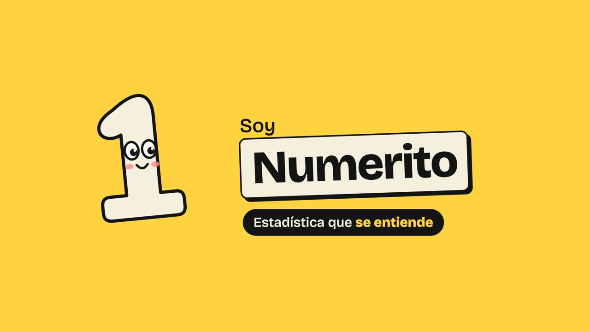

Muy pronto en YouTube
Hola, soy Numerito.
Estadística que se entiende
Cada semana te explico un concepto con ejemplos reales y animaciones, y te dejo un simulador para jugar con los números. Desde cero hasta nivel profesional, sin fórmulas que asusten.
Simuladores
Los ejemplos de los vídeos, para que juegues con ellos. Gratis y sin registrarte.
Ep. 1 · Media vs mediana
El bar de Messi
Mete a Messi en el bar y mira cómo se dispara la media mientras la mediana casi no se mueve.
Ep. 2 · Salario medio y mediano
Fabrica tu país
Sube solo los sueldos de arriba o solo los de abajo y mira qué pasa con el titular «el salario medio sube».
Ep. 3 · La moda
¿Existe la talla normal?
Sube y baja las ventas de cada talla de zapatilla y mira aparecer y desaparecer las modas.
Todos los episodios
Temporada 1 · Describir datos
Episodio 1 · se estrena el 22 de octubre
Media vs mediana: ¿si Messi entra en un bar, todos se hacen millonarios?
Episodio 2 · se estrena el 22 de octubre
Salario medio o mediano: ¿cuál te dice lo que cobra la gente?
Episodio 3 · se estrena el 22 de octubre
Moda: ¿existe la talla normal? Qué es la moda en estadística